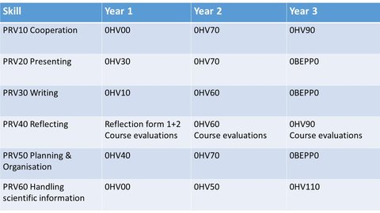

Student mentors
Every first-year student will receive guidance from a student mentor appointed by the department during the first year of his/her Bachelor’s program (see the Education and Exam Regulations (EER) article 7.4).
A student mentor is a second year or third year (or further) student of the BSc Program SI or PT. They will help your with all your practical issues that may arise when you start studying at the university (e.g. registration of courses, online sources, redirection: where to find what or who and how). They can also explain you about effective study skills (e.g. how to plan, how to study big books, how to prepare for exams). You will meet your student mentor in a group meeting or individually almost every week, especially in the first semester of your first year.
Our student mentors PT and SI of this year are: Emese Corbet, Anoek de Jonge, Max Kramer, Laura Nijenhuis, Roos Salomons, Joost van der Heide, Rachel Roumans, Marissa Damink, Nienke Buikstra, Glen McLachlan, Corné van Son, Judith Selle, Davine Janssen and Mahsa Nejatinamin (international student mentor).
Teacher Coaches
A teacher coach can help students make decisions regarding their elective courses and packages. Courses and packages can be matched with a students personal interests. The study coach will help students to reflect on what the prospects of certain courses are and to help keep the overall package coherent. The final responsibility of these decisions rests with the students, but the coach is there to help them.
The aim of the coaching model is to facilitate the student in developing a professional identity as an engineer. The focus is on the support and coaching of the student to make the right choices and to reflect on choices made to reach his/her personal targets. In the Education and Exam Regulations (EER) it is stated that a coach organizes four meetings per year, individually or for a group of students.
Our teacher coaches for PT: Raymond Cuijpers, Antal Haans, Jaap Ham, Yvonne de Kort, Daniel Lakens, Uwe Matzat, Peter Ruijten, Karin Smolders, Chris Snijders, Alina Huldtgren and Martijn Willemsen.
Students and coaches who need more detailed information regarding the specializations are invited to consult the following colleagues:
- Robotics: Raymond Cuijpers
- ICT: Martijn Willemsen
- Living: Antal Haans
Professional Skills
The matrix professional skills for the Major Psychology & Technology 2016 is as follows. Started before 2016? Check the downloads which matrix applies to you.
{kind=link}